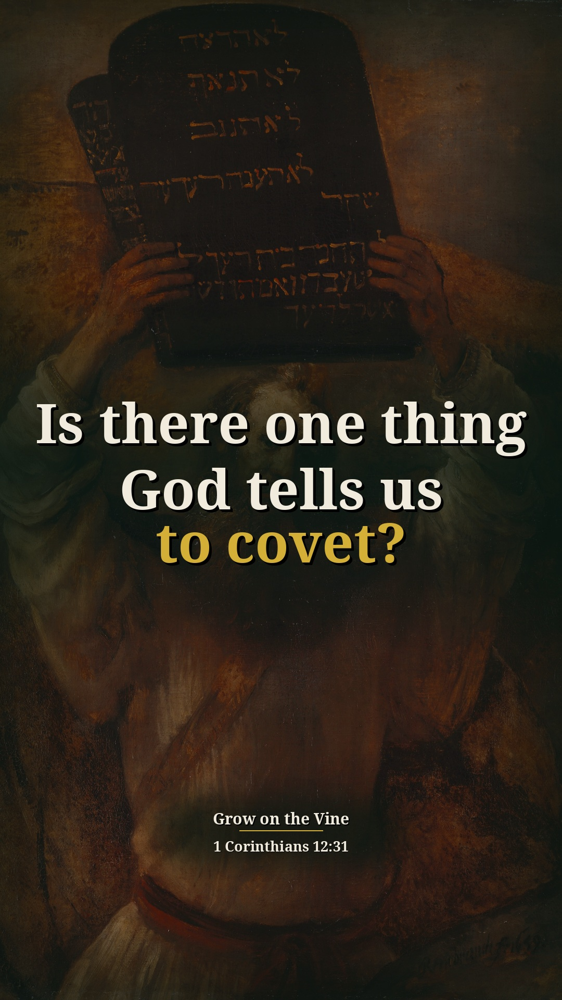
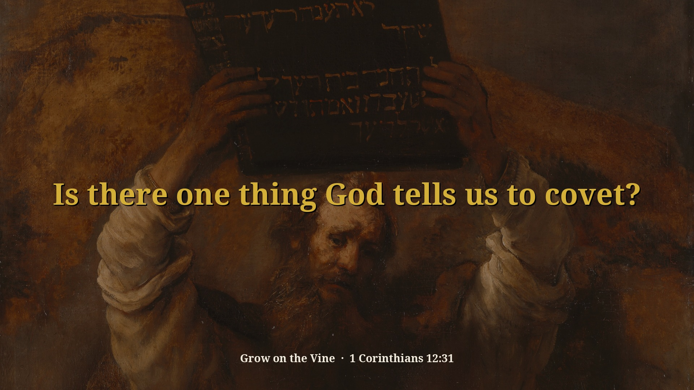
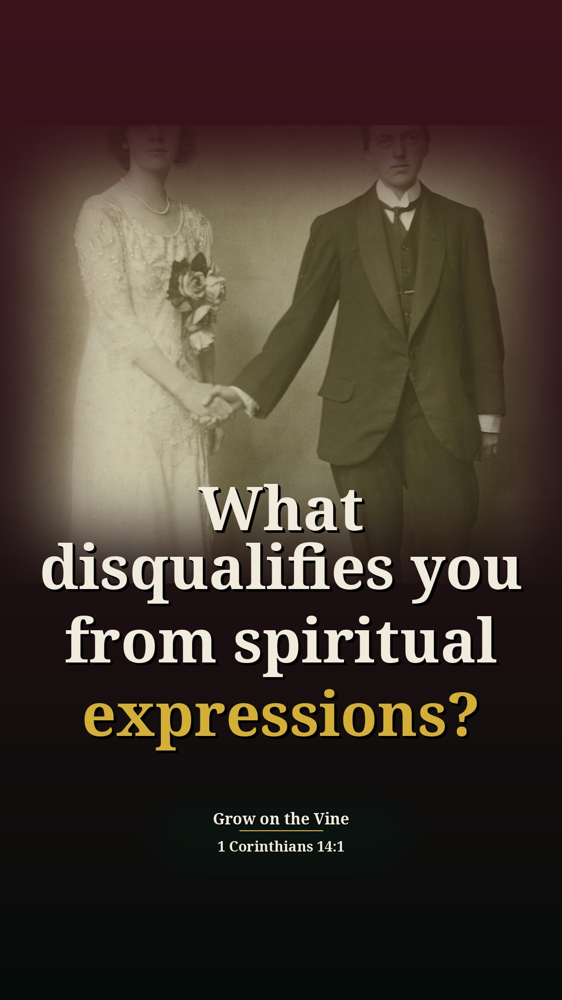
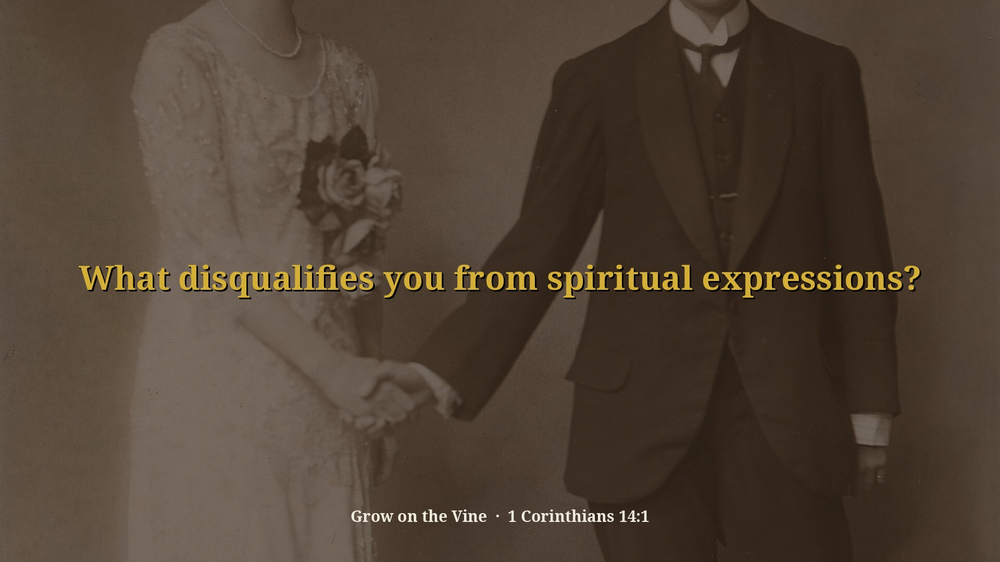
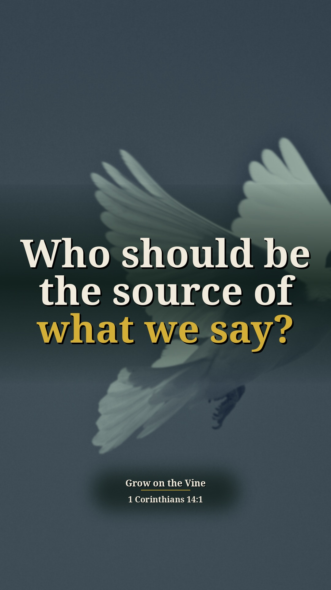
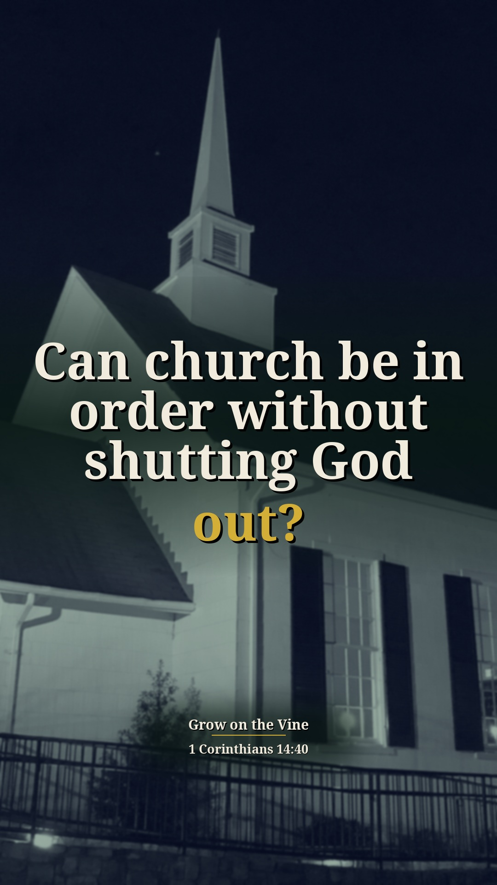
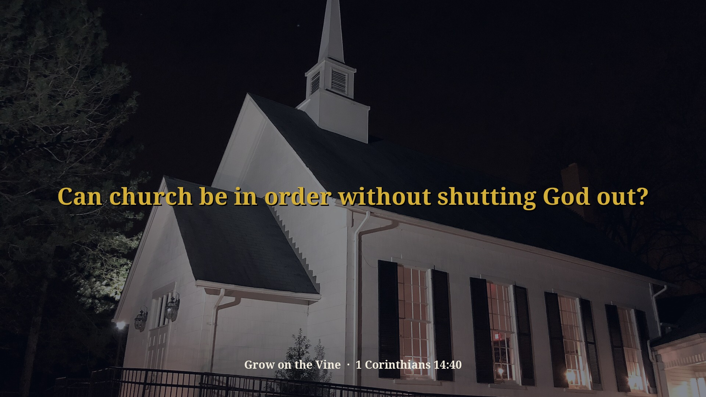
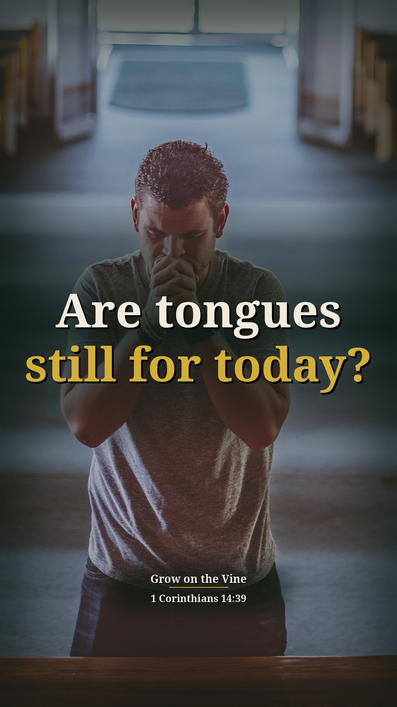

2012 Best Church Service One — 10 illustrated Shorts (preview)
Preview only, not posted anywhere. Source: 6arMfL_YD0M · Pastor David G. Kincer (assumed). Each card follows the clip-page order: video → short answer → his words → Scripture (NKJV) → full message.
Is there one thing God tells us to covet?
Watch the clip
Our short summary of this clip, not the preacher's exact words
Short answer: Yes. He says the Ten Commandments forbid coveting, but in 1 Corinthians 12:31 Paul says we are allowed to covet spiritual gifts, earnestly and seriously, and especially the best, higher gifts.
Why: Paul tells believers to earnestly desire the best gifts, so we must take spiritual things seriously instead of a concert-and-programs mentality.
“Number two, in chapter 12, verse 31, Paul said, you got to covet. See, the Ten Commandments says thou shalt not covet, but here you're allowed to covet. You're allowed to covet spiritual gifts.”
▶ 2:32
“We got to get away from the concert mentality that's in America today.”
▶ 3:01
“And best gifts means the higher gifts. There are levels of gifts.”
▶ 3:19
1 Corinthians 12:31 But earnestly desire the best gifts. And yet I show you a more excellent way.
Exodus 20:17 “You shall not covet your neighbor’s house; you shall not covet your neighbor’s wife, nor his male servant, nor his female servant, nor his ox, nor his donkey, nor anything that is your neighbor’s.”
Full sermon: 2012 Best Church Service One 0401 — full message page


Other title options:
- Can coveting ever be good?
- What gifts should we earnestly desire?
YouTube description (draft)
Is there one thing God tells us to covet? Read the short answer, the Scripture (NKJV) and the pastor's own words: https://growonthevine.com/clips/is-there-something-god-says-to-covet/ To see the full message, click here: https://www.youtube.com/watch?v=6arMfL_YD0M&t=152s Yes. He says the Ten Commandments forbid coveting, but in 1 Corinthians 12:31 Paul says we are allowed to covet spiritual gifts, earnestly and seriously, and especially the best, higher gifts. 1 Corinthians 12:31 (NKJV) Pastor David G. Kincer · Grow on the Vine Music: "Faith In Tomorrow" by Sascha Ende, licensed under CC BY 4.0 (https://creativecommons.org/licenses/by/4.0/) #Shorts #Bible #Jesus
Do your words build people up?
Watch the clip
Our short summary of this clip, not the preacher's exact words
Short answer: He says to judge it before you open your mouth: it has to edify, exhort and comfort, building up and encouraging people, and above all be easily understandable. If not, zip the lip.
Why: Paul says prophecy speaks edification, exhortation and comfort to men (1 Corinthians 14:3); even Scripture quoted without sense profits no one.
“See, judge it first before you open your mouth.”
▶ 10:49
“Number one, it's got to edify, exhort and comfort. See, it's got to build up.”
▶ 10:59
“So, you can't just use scripture without it making sense.”
▶ 11:49
“Is it going to profit people's life? And are they going to understand it? If not, zip the lip.”
▶ 12:02
1 Corinthians 14:3 But he who prophesies speaks edification and exhortation and comfort to men.
Full sermon: 2012 Best Church Service One 0401 — full message page
Other title options:
- Should we think before we speak in church?
- What should we say when someone is down?
YouTube description (draft)
Do your words build people up? Read the short answer, the Scripture (NKJV) and the pastor's own words: https://growonthevine.com/clips/do-your-words-build-people-up/ To see the full message, click here: https://www.youtube.com/watch?v=6arMfL_YD0M&t=649s He says to judge it before you open your mouth: it has to edify, exhort and comfort, building up and encouraging people, and above all be easily understandable. If not, zip the lip. 1 Corinthians 14:3 (NKJV) Pastor David G. Kincer · Grow on the Vine Music: "Wholesome" Kevin MacLeod (incompetech.com) Licensed under Creative Commons: By Attribution 4.0 License http://creativecommons.org/licenses/by/4.0/ #Shorts #Bible #Jesus
What disqualifies you from spiritual expressions?
Watch the clip
Our short summary of this clip, not the preacher's exact words
Short answer: He says love does nothing to hurt: adultery or stealing means he is not loving his wife, his children, others or God, and that eliminates him from spiritual expressions. Everybody is worshiping now, but not everybody is loving, so we need the goal to pursue love.
Why: Paul says you can't get into the power of the Spirit except through love; in pursuing love, spiritual manifestations are given (Romans 13:10; 1 Corinthians 14:1).
“Now, let me ask you this. How do I know if I'm loving?”
▶ 4:43
“I'm not loving my wife because see love does nothing to hurt.”
▶ 4:56
“Paul says you can't get in to the power of the Spirit, but through love.”
▶ 5:18
“And see, the church wants power of spiritual expressions, but they don't want to go through love.”
▶ 6:06
“Now everybody's worshiping, but not everybody's loving. There's something wrong.”
▶ 6:24
“We're into the music. We're into all that, but we're not into love.”
▶ 6:36
“And in pursuing love, then the peripheral thing given to us would be spiritual manifestations.”
▶ 6:49
Romans 13:10 Love does no harm to a neighbor; therefore love is the fulfillment of the law.
1 Corinthians 13:4-7 Love suffers long and is kind; love does not envy; love does not parade itself, is not puffed up; does not behave rudely, does not seek its own, is not provoked, thinks no evil; does not rejoice in iniquity, but rejoices in the truth; bears all things, believes all things, hopes all things, endures all things.
1 Corinthians 14:1 Pursue love, and desire spiritual gifts, but especially that you may prophesy.
Full sermon: 2012 Best Church Service One 0401 — full message page


Other title options:
- How do you know you're really loving?
- Can we worship and still not love?
YouTube description (draft)
What disqualifies you from spiritual expressions? Read the short answer, the Scripture (NKJV) and the pastor's own words: https://growonthevine.com/clips/what-disqualifies-you-from-spiritual-expressions/ To see the full message, click here: https://www.youtube.com/watch?v=6arMfL_YD0M&t=282s He says love does nothing to hurt: adultery or stealing means he is not loving his wife, his children, others or God, and that eliminates him from spiritual expressions. Everybody is worshiping now, but not everybody is loving, so we need the goal to pursue love. 1 Corinthians 14:1 (NKJV) Pastor David G. Kincer · Grow on the Vine Music: "Morning" Kevin MacLeod (incompetech.com) Licensed under Creative Commons: By Attribution 4.0 License http://creativecommons.org/licenses/by/4.0/ #Shorts #Bible #Jesus
Who should be the source of what we say?
Watch the clip
Our short summary of this clip, not the preacher's exact words
Short answer: He says prophecy means speaking by the inspiration of the Holy Spirit, not your own spirit or favorite doctrine, and the Holy Spirit must be the source. We want to beat each other over the head, but the Spirit wants to change, encourage and build lives.
Why: Paul calls prophecy the best gift (1 Corinthians 14:1), and in Acts 2:4 they spoke as the Spirit gave them utterance, not on their own.
“Now here is the best gift, prophecy. Prophecy means speaking by the inspiration of the Holy Spirit, not your spirit, not your little hobby horse doctrine, not your Calvinist, Lutheran or Catholic or whatever doctrine.”
▶ 7:33
“It can't be you. It's got to be the Spirit that initiates it.”
▶ 8:07
“Secondly, 1 Corinthians 14:15, the Holy Spirit must be the source.”
▶ 12:13
“Who gave the utterance? The Spirit. They didn't do it on their own.”
▶ 12:34
“We want to beat each other over the head. We want to correct each other. And the Spirit wants to change and encourage and build lives.”
▶ 13:12
1 Corinthians 14:1 Pursue love, and desire spiritual gifts, but especially that you may prophesy.
1 Corinthians 14:15 What is the conclusion then? I will pray with the spirit, and I will also pray with the understanding. I will sing with the spirit, and I will also sing with the understanding.
Acts 2:4 And they were all filled with the Holy Spirit and began to speak with other tongues, as the Spirit gave them utterance.
Full sermon: 2012 Best Church Service One 0401 — full message page

Other title options:
- What does it really mean to prophesy?
- Does God speak to tear us down?
YouTube description (draft)
Who should be the source of what we say? Read the short answer, the Scripture (NKJV) and the pastor's own words: https://growonthevine.com/clips/who-should-be-the-source-of-what-we-say/ To see the full message, click here: https://www.youtube.com/watch?v=6arMfL_YD0M&t=442s He says prophecy means speaking by the inspiration of the Holy Spirit, not your own spirit or favorite doctrine, and the Holy Spirit must be the source. We want to beat each other over the head, but the Spirit wants to change, encourage and build lives. 1 Corinthians 14:1 (NKJV) Pastor David G. Kincer · Grow on the Vine Music: "Inspired" Kevin MacLeod (incompetech.com) Licensed under Creative Commons: By Attribution 4.0 License http://creativecommons.org/licenses/by/4.0/ #Shorts #Bible #Jesus
Can church be in order without shutting God out?
Watch the clip
Our short summary of this clip, not the preacher's exact words
Short answer: He says things must be done decently and in order, but we can't stop seeking God because some mess it up, or be so worried about offending people that we offend God in His house. The spirit of the prophet is in control: you can control yourself.
Why: 1 Corinthians 14:40 and 14:32: all things decently and in order; the spirits of the prophets are subject to the prophets.
“First Corinthians 14:40, let all things be done decently, mannerly, and in order.”
▶ 14:11
“But I'm telling you, we can't stop seeking and responding to the Word of God because some people mess it up.”
▶ 14:30
“We're so worried about offending people, we don't care if we offend God. And it's His house.”
▶ 14:55
“Paul says they're gonna say you are what? Mad, you're crazy people. And that's exactly what they said about us Pentecostals.”
▶ 20:01
“Paul said that the spirit of the prophet is in control. You can control yourself and not say anything and just feel good.”
▶ 20:21
1 Corinthians 14:40 Let all things be done decently and in order.
1 Corinthians 14:32 And the spirits of the prophets are subject to the prophets.
Full sermon: 2012 Best Church Service One 0401 — full message page


Other title options:
- Are we more afraid to offend people than God?
- Does the Holy Spirit make you lose control?
YouTube description (draft)
Can church be in order without shutting God out? Read the short answer, the Scripture (NKJV) and the pastor's own words: https://growonthevine.com/clips/can-church-be-in-order-without-shutting-god-out/ To see the full message, click here: https://www.youtube.com/watch?v=6arMfL_YD0M&t=851s He says things must be done decently and in order, but we can't stop seeking God because some mess it up, or be so worried about offending people that we offend God in His house. The spirit of the prophet is in control: you can control yourself. 1 Corinthians 14:40 (NKJV) Pastor David G. Kincer · Grow on the Vine Music: "Stoic Morning" Kevin MacLeod (incompetech.com) Licensed under Creative Commons: By Attribution 4.0 License http://creativecommons.org/licenses/by/4.0/ #Shorts #Bible #Jesus
Are tongues still for today?
Watch the clip
Our short summary of this clip, not the preacher's exact words
Short answer: He teaches tongues are Bible and for today: one who speaks in a tongue speaks to God and edifies himself, and Paul says forbid not to speak in tongues. Without interpretation keep silent, but don't forbid it.
Why: 1 Corinthians 14:2, 4 and 39: speaking to God, edifying yourself, and "do not forbid to speak with tongues."
“I want to convince you today that tongues are Bible and they are for today.”
▶ 17:35
“This is not my teaching. I'm just his microphone.”
▶ 17:44
“When we speak in an unknown tongue we speak to God, not to man. Now what's wrong with us speaking to God?”
▶ 17:52
“I should be what? Building myself up.”
▶ 18:44
“Then Paul says forbid not to speak in tongues.”
▶ 20:43
“They have said it's not for today. They've rewritten the whole Bible.”
▶ 20:55
“But he still says what? Don't forbid to speak in tongues. And so I submit to you today tongues are important when it's done right.”
▶ 21:55
1 Corinthians 14:2 For he who speaks in a tongue does not speak to men but to God, for no one understands him; however, in the spirit he speaks mysteries.
1 Corinthians 14:4 He who speaks in a tongue edifies himself, but he who prophesies edifies the church.
1 Corinthians 14:39 Therefore, brethren, desire earnestly to prophesy, and do not forbid to speak with tongues.
Full sermon: 2012 Best Church Service One 0401 — full message page

Other title options:
- What's wrong with talking to God?
- Did Paul say to forbid tongues?
YouTube description (draft)
Are tongues still for today? Read the short answer, the Scripture (NKJV) and the pastor's own words: https://growonthevine.com/clips/are-tongues-still-for-today/ To see the full message, click here: https://www.youtube.com/watch?v=6arMfL_YD0M&t=1055s He teaches tongues are Bible and for today: one who speaks in a tongue speaks to God and edifies himself, and Paul says forbid not to speak in tongues. Without interpretation keep silent, but don't forbid it. 1 Corinthians 14:39 (NKJV) Pastor David G. Kincer · Grow on the Vine Music: "Crinoline Dreams" Kevin MacLeod (incompetech.com) Licensed under Creative Commons: By Attribution 4.0 License http://creativecommons.org/licenses/by/4.0/ #Shorts #Bible #Jesus